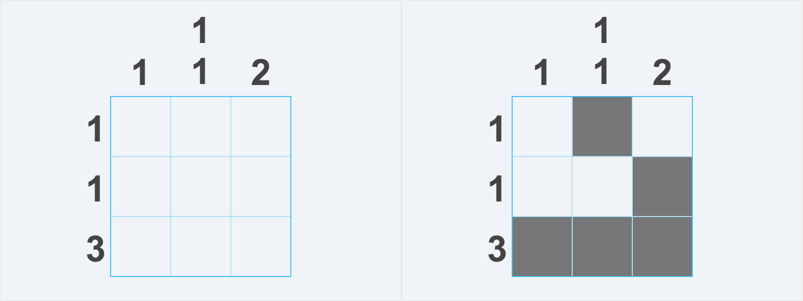
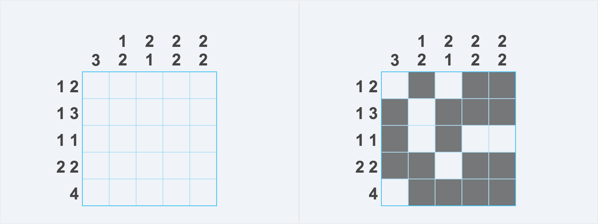
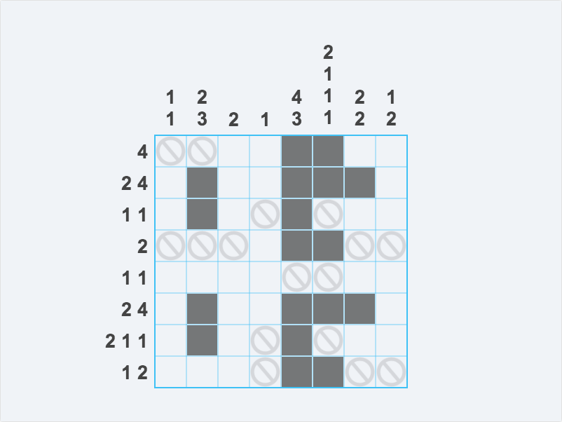

Left mouse button - Toggle a grid cell
Right mouse button - Place a clue to flag cells as not-filled
This game is a basic interpretation of a Nonogram, where you fill in a pattern on a grid based on the numbers surrounding it.
The numbers on the sides are clues to which grid cells need to be filled in. The number denotes the amount of connected cells which are filled in and in the cases where there is more than one number, it means that there are several groups of cells with one (or more) empty spaces between them. 
The filled in cells don't have to be separated by a single empty space, nor do they have to hug the sides. 
Use the right mouse button to put down clues on which cells shouldn't be filled in. This really helps on larger boards. 